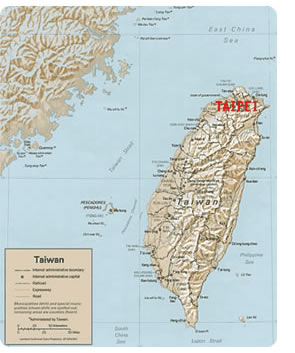

General Information
About TaiwanFormosa - beautiful island
Formosa is what the Portuguese called Taiwan when they came here in the 16th century and saw the island's verdant beauty. Taiwan is an island about 36,000 square km located off the coast of southeastern China, southwest of Japan and north of the Philippines. It lies off the southeastern coast of mainland Asia, across the Taiwan Strait from Mainland China. Taiwan is one of the most unsung tourist destinations in all of Asia, its modern emergence as an economic and industrial powerhouse still overshadowing the staggering breadth of natural, historic and culinary attractions this captivating island has to offer. A fascinating mix of technological innovation and traditional Chinese and aboriginal cultures and cuisines.- Area: 36,000 square kilometers
- Population: 23 million
- Language: Mandarin/Taiwanese/Hakka
- Religion:Buddhism/Taoism/Christian/Islam/Catholicism
Climate
The Tropic of Cancer runs straight through the middle of Taiwan bringing with it tropical and subtropical weather. Taiwan typically presents an average temperature of 22°C (71.6°F) all year round. There is no severe cold in winter, but it has brutal heat and high humidity in summer. Generally, November to the next April is the best timing to visit with regards to temperature and humidity.Current temperature in Taipei:
Time Zone
Taiwan is 8 hours ahead of Greenwich Mean Time (GMT).Currency
The currency of Taiwan is the New Taiwan Dollar. The currency code for New Dollars is TWD, and the currency symbol is NT$. Foreign currencies can be exchanged at the banks, airport and hotels. Payment by major credit card is accepted almost everywhere around Taiwan. For different currencies, please visit the online currency converter at: http://www.xe.com/currencyconverterCredit Card
Major credit cards such as American Express, Master Card, Visa, JCB, and UnionPay are accepted. Traveler's checks may be cashed at foreign-exchange banks, some tourist-oriented businesses, and most international tourist hotels (by room guests).Electricity
- Voltage: 110 V
- Frequency: 60 Hz
- Power sockets: type A / B
In Taiwan the standard voltage is 110 V. The standard frequency is 60 Hz. The power sockets that are used are of type A / B. Your need for a power plug adapter depends on the country you live in.
Power Sockets
Below you find pictures of these power sockets and corresponding plugs.Cellular Service
SIM cards are readily available for tourists and visitors in Taiwan. The four major service providers are- Chungwha Telecom
- Taiwan Mobile
- FarEas Tone
It is easiest to purchase a SIM card at the airport. To purchase a SIM card in a store, you need to have two (photo) IDs. Your passport and another (official looking) document like a driver’s license. Taiwan is one of the few countries which still offers real unlimited 3G internet on daily packages. If you wish to purchase a SIM card at the airport, please visit:
http://www.taoyuan-airport.com/english/store3_2/1106
Telephone Service
Both coin and card pay public phones are available in Taiwan:- Coin phones accept coins in denominations of NT$1, NT$5, and NT10.
- Card phones accept both magnetic-strip and IC stored-value cards available in amounts of NT$100, NT$200, and NT$300. These cards are sold in railway stations, bus stations, and convenience stores.
- Local calls from public phones are charged at NT$1 per minute.
- International direct calls are charged at NT$5 per specified unit of time.
- When making local calls it is not necessary to dial the area code. When making long-distance calls, first dial the area code of the receiving party (see explanation on the public telephone) and then the number itself.
- When making local calls, it is not necessary to dial the area code; however, when making long-distance calls, first dial the area code of the receiving party (see the explanations on public telephones) and then the number itself.
Calling Overseas Direct from Taiwan:
- Dial Taiwan's international access code (002 or 009).
- Dial the country code of the country being called (Ex. "1" for the US, "86" for mainland China).
- Dial in the area code of the called party (leaving out the long-distance digit, "0").
- Dial the local number of the called party. For operator-assisted international calls, please dial "100."
- For information on international calling, call this toll-free number: 0800-080-100.
Tipping & Tax
Tipping is not customary in Taiwan, but some hotels and restaurants automatically add a 10% service fee to the bill. Otherwise there are no hard and fast rules. Of course you can always make someone happy with a small reward for good service. Sales tax is included in the listed price in Taiwan.Language
The most popular foreign language in Taiwan is English. It is relatively easy to use English in Taipei.The official language of Taiwan is Mandarin Chinese and the native Taiwanese tongue, alternatively called Taiyu or Minnan-hua, is still widely spoken as a first language by the island's dominant ethnic group, which originally hails from China's southern Fujian province.